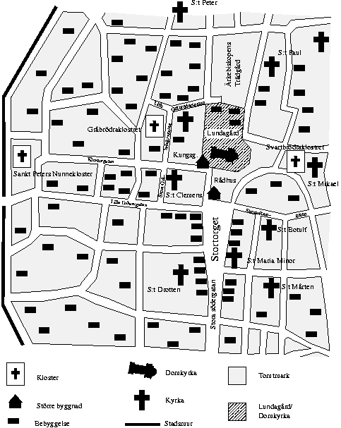

Curia Lundense, ärkebiskopsborgen i Lund, och domkyrkoborgen -- ett område kring kyrkan som skyddades av en hög mur. Skissen överenstämmer i stora drag med vad som är känt om borgen.
C arl beordrade hären att slå läger, och skickade ut folk att skaffa in mat och dryck. Hästar och oxar -- härens rid- och dragdjur -- vattnades i dammarna utanför Allhelgonaklostret norr om Lund. För ovanlighetens skull hade det varit en sträng vinter det här året. Men nu hade landskapet tinat upp, och den skånska vintern var mild, som den oftast är. Det gick faktiskt att, årstiden till trots, hitta åtminstone magert bete för härens djur, och djuren behövde inte stallas.
Det var faktiskt idealiska förhållanden. Det var fortfarande issörja i sundet, som därför inte var farbart. Skåningarna kunde inte förvänta sig försträrkningar från Själland på länge än. Den svenska härens huvudstyrka hade gått över gränsen söder om Markaryd; andra avdelningar hade gått in i Skåne via Halland och Blekinge. Trupperna hade återsamlats vid Herrevads kloster och marscherat västerut. Kung Carl belägrar och bränner, först Hälsingborg och sedan Landskrona.
Det fanns gott om bönder som fick stå till tjänst med både hö, säd och kött. Inte behövde väl bönderna något hö, deras djur hamnade ju i den svenska härens köttgrytor. Hade de inte några djur, kunde de ju inte plöja, och då behövde bönderna inte heller något utsäde. Det fick bli till bröd för Carls knektar. Nästa vinter skulle bli brödlös för Skånes bönder.
Carl slog sig ner vid bordet i sitt tält och begrundade läget. Så här långt hade fälttåget varit en framgång. Åtskilliga stormän hade tagit till harvärjan och flytt. Den svenska hären hade grundligt plundrat och bränt deras slott och borgar.
Så hade det även gått för de städer där borgarna satt sig på tvären. På många håll hade städerna dagtingat och betalat lösen för att slippa plundring.
Nu var det den strulige lundabispens tur. Carl reste sig och gick utanför tältet. Lutande sig mot flaggstången, betraktade han tankfullt stadsvallen.
Staden Lund skulle han kunna ta med ena handen bakbunden. Vallen var kringränd av ett blött, gyttjigt dike. Även om vattenståndet var högt nu i vårvintertider, kunde en högväxt knekt lätt vada över utan att ens bli blöt om kjortelkanten. Portarna skyddades av torn, men de imponerade inte heller på Carl. Lundaborna skulle säkert bemanna sina vallar. Men de var samma patrask som det han mött i de andra skånska städerna. Nej, problemet fanns inne i staden. Det problemet hade två sidor: Den första var Tuve, tjurig präst. Carl tog upp ett papper och läste högt.
"Den högst vördnadsvärde fadern och herren i Kristus, herr Tuve, av Guds nåd ärkebiskop av Lund, magister i de fria konsterna, doktor i den heliga teologin, Sveriges Primas och den apostoliska stolens legat"
Carl liksom spottade fram orden "Sveriges Primas". Påven i Rom -- den apostoliska stolen -- höll envist fast vid att Lunds biskop var lite finare än han i Uppsala. Ett ställningstagande som var helt obegripligt för en svensk kung. Lika obegripligt som kyrkans krav på oberoende från kungamakten.
Problemets andra sida kunde man skymta mellan husen i staden. Den höga krenelerade muren, porttorn. Och innaför dem stora befästa byggnader.
Lundagård -- Curia Lundensis ärkebiskopens borg. Dess murar försvarades av väl tränade och betalda knektar.
"Satans klerker", svor Carl tyst för sig själv.
Och inte brydde det honom att Gud hörde.
"Ers majestät?" En officer hade hört mumlet, men inte uppfattat budskapet.
"Jag sa: Gör klar en fänika tunga ryttare. Med kungens standar, parlamentärsflagg, trumpetare, trumslagare och pipare, allt till häst! Och, sadla min häst!"
*
Vibeke suckade tungt medan hon gick uppför trappan i Lunds domkyrkas södra torn. Hela staden var annorlunda, och väntade på detta skrämmande. Luften var tät av en blandning av förtvivlan, skräck och spänning. Mycket folk samlades på Lundagård, och kring domkyrkan. Knektar, präster och munkar. Mitt i allt detta hemska, och spännande, levde Vibeke sitt vardagsliv.
Aldrig fick hon vara med när det hände något. Bara slita och släpa i bakstugan hela dagen. Och nu bakades det mer än någonsin, eftersom det fanns mer folk i borgen än Vibeke någonsin varit med om.
Efter dagens bak skulle hon prompt gå och läsa för broder Konrad. Vibeke var säker på att, även om Apokalypsens ryttare red genom staden, eller det tusenåriga lyckoriket upprättats på jorden, munken ändå skulle ha propsat på att hon skulle läsa sitt latin. Cunradus Dasypodius, som munkarna och prästerna kallade honom, hade envist försökt övertyga henne om värdet av boklig bildning.
Först hade hon undrat varför just hon skulle behöva arbeta längre än alla andra småpigor. Ingen av de andra kunde läsa och skriva. Än mindre behövde de andra kunna räknelära, teologi, biblisk historia, filosofi och latin. Broder Konrad tyckte att hon skulle viga sig till Gud, och bli nunna i S:t Peters kloster.
Med tiden hade läsningen blivit till glädje. Varje dag i bakstugan såg hon fram emot timmen med Cunradus. Innan hon gick till honom måste hon alltid läsa tiden. Därför stod hon här, framför det stora och märkliga uret i domkyrkan. Man kunde läsa klocktavlan från en öppning på framsidan av kyrkan. Men för att läsa kalendertavlan var man tvungen att gå upp till uret. Hon skrev ner dagens datum och helgon, månens fas och planeternas läge.
"Vi skriver i dag lördagen den 12 februari 1452.", muttrade hon. "Det blir fullmåne i natt." Vibeke hade anat att hon fått den här uppgiften, för att hon skulle bli medveten om tiden. För att hon själv skulle lära sig att hitta rätt sidor i bönboken. Broder Cunradus hade allt nog det här klart för sig henne förutan.
Vibeke stod hon där och tittade på träskulpturerna. Kronos, tidens gud, den lilla trägubben som med sin pekpinne visade dagens datum på kalendertavlan. Hon hade stått här nästan varje dag sedan hon lärt sig läsa latin, men... inte hade hon kommit sig för att studera honom. Han log visst lite. Oj, vad händer? Kalendertavlan blev otydlig. Den började snurra, fortare och fortare.
Kronos kom emot henne och hälsade höviskt, som om hon varit en jungfru av ädel börd. Hon neg tillbaka så vackert hon kunde. Han kom närmare henne, och medan han gjorde det, slätades dragen i hans ansikte ut. Sedan var det som hans ben inte bar honom. Han föll framstupa, över henne.
Själv föll hon då baklänges. Hon kände den varma tyngden av hans kropp mot sin, där hon låg raklång på rygg på det kalla stengolvet. Varm men tung och livlös. Kroppen luktade annorlunda. Naturligtvis luktade den människa, men inte lukten av ett hårt dagsverke. Men inte heller den starka blandningen av parfym och kropp som omgav fint folk.
Det var en yngling som lösgjort sig ur Kronos. Pojken levde, för hon kände hur han andades. Trädgubben stod nu på sin vanliga plats. Möjligen föreföll han ännu mer nöjd med sig själv än vanligt. Ynglingen rörde lite på sig.
"Förlåt, jag vet inte vad som hände. Måste ha svimmat och slagit i huvudet." sa han, Och började kravla sig upp på alla fyra. "Aj! Mitt huvud." Han log snett. Vibeke förstod hans språk. Det lät lite som svenska, men ändå inte. Hon satte sig själv upp.
"Det var inte så farligt för mig. Slog inte i huvudet." svarade hon, och reste sig sakta. Hon samlade ihop sina skrivdon, och sin pergamentsremsa. Där låg en vackert röd stickad mössa med texten INTERSPORT. Hon plockade upp den också. Först såg hon mössan, sedan på honom. Hon kände sig lite blyg.
"Jag heter Vibeke." Hon närmade sig honom försiktigt, och såg honom i ansiktet. "Du har visst fått både bula och blåtira. Är den här din?" Hon sträckte fram mössan.
"Ja. Tack så mycket", sa Peder och tog emot mössan. "Det gör inte så ont längre, jag klarar mig. Förresten så heter jag Peder."
Den här pojken såg annorlunda ut. Främmande kläder. Vibeke kände sig osäker i hans närvaro, och säkert väntade broder Cunradus redan. Hon måste gå nu.
"Vi ses, kanske. Hejdå!" sa hon, och sprang så på lätta fötter ner för trappan, och ut ur kyrkan.
*
Broder Konrad, Cunradus Dasypodius, tiggarmunk i gråbrödernas orden -- franciskanerna, lutade sig över bokföringen. Skrivarstugan, Lundagårds scriptorium, användes mer för administration än för att kopiering av lärda avhandlingar eller heliga urkunder. Broder Cunradus undrade om något verk av vikt någonsin författats här.
Cunradus var astronomus, kunnig i naturfilosofi, astrologi, celest mekanik, geometri, algebra och aritmetik. Han kom till Lund i samband med att franciskanerna anlade sitt universitet -- Studium generale -- i Lund efter generalkapitlets godkännande 14 år tidigare. Cunradus undrade ofta vad han som astronomus hade här att göra, när studiosi bara kunde nå baccalaureusgraden i teologi.
Lund var inte nödvändigt för Cunradus, men Cunradus var nödvändig för Lund. Han hade gjort sig oumbärlig både i sitt kloster, och här i borgen. Tuve ersatte klostret frikostligt för hans arbete.
"Just ett snyggt arbete för en astronomus!" tänkte Cunradus, och fyllde ytterligare en rad i Tuves tjocka räkenskapsbok. Brodern la handen mot bröstet och kände på sitt astrolabium, som han bar runt halsen i en tung kedja av mässing under sin munkkåpa. Ett av de få glädjeämnena för honom var att underhålla det astronomiska uret. Det var ett mycket vackert arbete från förra seklet. Nästan all vår kunskap om världsalltet och himlakropparnas rörelser fanns förkropsligad i dess mekanik.
Vissa fördelar hade placeringen dock. Inkvisitionen var långt borta. Knappast någon här kände igen en kättersk tanke. Cunradus kände sig ganska säker på att inte behöva gå samma väg som hans ordensbröder Roger Bacon och William Ockham gått tidigare. Båda hade råkat illa ut, även om ingen av dem hade dock behövt gå hela vägen till bålet.
Plötsligt ljöd en trumpetsignal och trumvirvlar utifrån borggården. Kommandorop och ljud av springande fötter ekade därutanför. Något hade fått Tuves svenner på fötter, och Cunradus nyfikenhet drev ut även honom.
Ute på borggården möttes han av en stor oreda. Tjänstefolket höll sig undan -- tryckte sig mot husväggar. Böss- och armborstskyttar besatte murar och torn. Mitt i oredan steg Tuve till häst i full ornat. Jämte honom satt Lundagårds hövitsman på en kraftig stridshingst, och tre av domkapitlets kaniker, också de till häst.
Till denna lilla grupp anslöt sig nu ryttare i tung rustning. När truppen var komplett, ljöd en trumpet, och ryttarna formerade sig för marsch. De red alla, två och två, ut genom norra porten. Cunradus kände hur en hand sökte hans, och han vände sig om. Bredvid honom stod hans lilla skyddsling, Vibeke.
Cunradus nickade till flickebarnet. Tiden hade gått, och hon höll på att mogna till kvinna. Men för Cunradus skulle hon alltid förbli det lilla hittebarn, som tagits om hand här ungefär samtidigt med att Cunradus anslöt sig till Lunds gråbrödrakloster. Nu tjänade Vibeke som piga i bispens bakstuga.
Broder Cunradus hade tidigt fattat tycke för det intelligenta och vackra barnet, och undervisade det i läsning och skrivning. Hon hade gott huvud, till och med latinet klarade hon väl. Bättre än mången djäkne på domskolan. Och hennes sångröst klingade rent som silver. Cunradus tänkte sig en framtid för henne bland systrarna i S:t Peters. När det nu inte gick att skicka kvinnor till goda universitet, som de i Paris och Bologna.
"Det är Carl Knutsson som är här, och vill parlamentera", viskade hon.
Under de senaste dagarna hade oroligheterna i Skåne märkts mer än vanligt. Vid alla tider på dygnet hade kurirer till häst sänts iväg, och kommit tillbaka. Tuve hade dragit in trupper från andra borgar. Cunradus hade inte sett så mycket soldater i Lundagård under sin tid där. Förmodligen stod Ivöhus, Åhus och Borgeby nu nästan utan försvar. Tuve hade uppenbarligen bestämt sig för att bara försvara Lundagård och naturligtvis hans starkaste fäste, Hammershus på Bornholm.
Vibeke släppte sin beskyddares hand.
"Vi ses. Jag måste få se vad som händer", viskade hon. Vips var hon som uppslukad av folkvimlet.
"Nej!" skrek Cunradus. Fast för sent. Som vanligt. Hal som en ål, och snabb som en vessla var hon. Och alltid ville hon vara i händelsernas centrum. Och nästan alltid frågade hon om lov efteråt.
Ett gott hjärta hade hon, och en förmåga att klara sig. Men nu i dessa tider. Cunradus skakade på huvudet. Staden vimlade av knektar och lyckosökare, och en ung vacker flicka var lovligt byte för många av dem. Munken rös vid tanken, suckade och återvände till sitt arbete.
$Id: kapitel-01.html,v 1.11 2001/10/07 16:47:28 siglun Exp siglun $ $Log: kapitel-01.html,v $ Revision 1.11 2001/10/07 16:47:28 siglun Diverse språkliga och andra ändringar. Revision 1.10 2001/07/20 15:51:41 siglun reformattering efter införande av .initial. smärre fixar Revision 1.9 2001/07/14 20:54:45 siglun Tagit bort vissa "barnsliga" delar. Revision 1.8 2001/07/09 09:50:13 siglun Bytt namn på Petra. Hon heter nu Vibeke. Ändrat ordningen på vissa stycken så att vi träffar Vibeke innan Cunradus, men efter Carl. Revision 1.7 2001/07/08 16:01:29 siglun Lagt till en person, Petra, till persongalleriet. Cunradus skyddsling. Revision 1.6 2001/07/05 15:57:51 siglun Enkla korrigeringar Revision 1.5 2001/06/23 15:04:54 siglun Infört Cunradus Dasypodius Revision 1.4 2001/06/21 08:05:07 siglun Språkliga förbättringar, mest. Revision 1.3 2001/06/20 11:25:17 siglun Låtit Carl slå läger norr om Lund, invid Allhelgonaklostret. Revision 1.2 2001/06/19 10:28:08 siglun Fått mera flyt i början, och rättat andra fel. Revision 1.1 2001/06/19 09:02:00 siglun Initial revision
Vintern i Lund är typiskt skånsk. Den saknar vanligtvis vad de flesta andra skandinaviska vintrar har i övermått: Snö och kyla. Lund har en evigt grå, dimmig, regnig och blåsig vinter. Få andra vintrar klarar av att vara kallt snålblåsiga och vara grötigt dimmiga, samtidigt.
Det var tisdagen den 12 februari 2002. Nästan halva februarilovet hade gått. När skolorna har lov, då är Lunds vinter mer grå än annars. Gråheten känns värre om man har vaknat för tidigt. Och det gör man om ens Mamma och Pappa stiger upp, sätter på radionyheterna, rostar bröd, kokar gröt, eller vad det nu är föräldrar älskar att göra tidiga lördagsmorgnar. Har man dessutom lov, är varje uppvaknande för tidigt.
Peder "Ludde" Nielsen, drog täcket över huvudet, Hans föräldrar slamrade med gröttallrikar och kaffekoppar, och dukade fram dagens morgonmål på köksbordet.
Snart, men inte riktigt än, skulle en förälder komma och förkunna att han inte borde sova bort februarilovet. Föräldrar ser morgonsömnen som en risk, deras barn den som en möjlighet.
"Ludde" var ett nytt öknamn. Peder fick det i samband med puberteten. Alla pojkarna hade börjat få hår på olika ställen. På Peders del hade det blivit fler ställen än på de andra. Ovansidan av hans fötter täcktes nu av ett yvigt rödblont fothår. Så hade han fått öknamnet "Ludenfot", vilket i dagligt tal kärleksfullt förkortades till "Ludde". Båda namnen var lika förfärliga i Peders öron.
Sängen är den plats där den skånska vintern är som vitast, för snön är mer grå än vit.. Peder njöt av sängvärmen, av att inte behöva möta kompisarna, av att slippa byta om tillsammans med alla andra på gympan, av att slippa bli kallad "Ludde". Dörren öppnades.
"Peeeder, dags at äta fruuukost", ropade Mamma genom dörrspringan.
Familjen Nielsen har alltid satsat stort på dagens första måltid, som är den som förbereder människans för de kommande tolv timmarnas slitande och släpande.
Tidningen delas. Det finns dock vissa fysiska begränsningar för hur en tidning kan delas. Hur gärna man än vill så är det omöjligt att klyva blad i fram- och baksida. Och Ida, Peders syster, har en förkärlek att vilja läsa det som är på baksidan av den artikel Peder valt att läsa med sina yrvaket kisande ögon.
Tvisten bilades genom att Peder fäster uppmärksamheten på lokalsidorna i stället. Det händer faktiskt en hel del här under februarilovet! Det mesta Peder såg bland notiserna för dagens aktiviteter var sådant som föräldrar är nyttigt. Nyttigt på samma sätt silkesstrumpor och tysk grammatik.
Men ibland kan man välja något "nyttigt". Det blir mindre diskussioner. Peder begrundar vad tidningen har att erbjuda en ung man som inte tycker om vinteraktiviteter utomhus i ett dimmigt och snålblåsigt väder utan snö. Lite park- och kyrkohistoria kanske:
Lundagård och domkyrkan på medeltiden -- Föredrag och aktiviteter på Kulturhistoriska muséet och i Domkyrkan. Samling i Kulturens hörsal 9.00, tisdagen den 12 feb 2002.
Han skulle garanterat slippa sina plågoandar. De vuxna kan visa sina ofrivilligt komiska sidor, och locka till skratt. Det värsta som skulle kunna hända var att de krossade tråkighetsvallen. Och om parken Lundagård blev tråkig, då låg Café Lundagård bra till. I vilket fall skulle föräldrarna bli imponerade över en lovdag med tema Lundagård. Den förväntade vinsten var inte särskilt hög, men kostnaderna var extremt låga.
Duschen och kläderna fixades kvickt med lovdagsmått mätt. Peder kom i ganska god tid.
*
"Det är med stor glädje jag hälsar er alla hjärtligt välkomna", hälsade en störigt glättig informatörstyp.
Ocn "alla", ja det var väl åtta, nio ungdomar och någon enstaka vuxen.
"Här har vi vår arkeolog, Johan Andersen", fortsatte informatörstypen. En allvarlig man i rödrutig flanellskjorta reste sig och bugade mot publiken.
"Här har vi vår gästande matematiska astrofysiker, Jasmine Rauchfuß."
"Hon vet allt om tiden, om tiden i medeltida världsbilden, om allt i tiden i den moderna vetenskapliga världsbilden." förklarade informatörstypen. "Hon kommer att visa uret i domkyrkan, och sätta in det i sitt historiska sammanhang"
En flicka, eller ja, ung kvinna, reste sig och nickade leende mot publiken. Sen satte hon sig med en knyck på huvudet för att befria ögonen från sitt blonda hårsvall. Runt hennes hals hängde ett blänkade smycke i en kraftig kedja i samma metall. Kanske mässing.
När Jasmine Rauchfuß fyrtio år senare ser tillbaka till denna episod konstaterar hon:
"Detta var mitt första framträdande inför publik, även om den var en liten i jämförelse med de jag senare mötte i föreläsningssalar runt jorden. Men just i det ögonblicket jag reste mig inför dessa ungdomars ögon kände jag alla de symtom en föreläsare eller skådespelare känner vid sitt första publika framträdande."
Informatören introducerade andra, en konsthistoriker och en expert på medeltida textilier och kläder.
Först ut var Johan Andersen. Det var föredrag, och visning av fynd, både ute i muséets utställningshallar, och i arkeologernas laboratorier. Johan hade dukat upp föremål som hittats i Lundagård.
Nyttoföremål, prydnader, smycken, vapen. Allting i en allsköns blandning, stort och smått. Viktigt och oviktigt. Visningarna gjorde att historiska personer fick liv, blev människor av kött och blod. Människor som föddes, växte upp, älskade och dog.
"Ärkebiskopen här i Lund var inte vilken präst vem som helst", konstaterade Johan.
Curia Lundense, ärkebiskopsborgen i Lund,
och domkyrkoborgen -- ett område kring kyrkan
som skyddades av en hög mur. Skissen överenstämmer
i stora drag med vad som är känt om borgen.
"Detta var Nordens första ärkebiskopsstol. Innehavaren var genom medeltiden påvens legat och Sveriges primas." Johan såg de undrande blickarna och fuktade läpparna.
"Ja, det vill säga han var påvens utsände, och samlade in pengar från kungarna här i Norden, som skulle skickas till Rom. Kungarna betalade tionde till påven, precis som bönderna betalade tionde till byprästen." Johan log. "Och ärkebiskopen i Sverige fick betalt av svenske kungen, och skickade pengarna hit. Sen skickade lundabispen pengarna till Rom."
"På många platser har vi nästan inte gjort några större utgrävningar alls. Så är det faktiskt i Lundagård, men där har vi provborrat." På en lång labbänk låg borrkärnor, flera meter långa.
"De här borrkärnorna kommer från en tomt i centrum, och den visar en massa intressant."
Johan pekade på ett svart område mitt på en av kärnorna
"Här ser ni resterna av en massa måltider. Det är helt enkelt en komposthög. Det är mull, matjord.". Johan flyttade handen och pekade på ett annat svart område.
"Här är en helt annan form av svärta. Aska. Det är från den stora branden i februari månad 1452 när när Carl Knutsson Bonde brände staden. Utom Lundagård och domkyrkan." förklarade Johan. "Ja, det är ju faktiskt jämt 650 år sedan!"
Efter Johan Andersen visades textilsamlingar, rekonstruerade medeltidskläder och annat. Peder började bli hungrig, och ämnet gjorde att hans tankar började vandra i riktning mot Café Lundagård. Lunch (till reducerat pris) blev räddningen.
Arkeologen, Johan Andersen, visade deltagarna runt i Lundagård. Han pekade ut var borgens murar hade gått, och var de olika byggnaderna hade stått.
Intressant nog var domkyrkan omgärdad av en egen mur. Man kunde gå via Lundagårds södra port, ut i "domkyrkoborgen". Ärkebiskopen hade ett eget kapell i domkyrkan, och detta stod i förbindelse med hans privata hus via en långsmal byggnad, en gång under tak.
Johan fortsatte med att leda gruppen till domkyrkan, och väl där gav han en kort sammanfattning av vad som är känt om dess historia. Framför uret tog Jasmine Rauchfuß över.
"Detta är Horologicum mirabile Lundense, det underbara uret i Lund", förklarade Jasmine med en lite lustig brytning. Efter ett leende och en konstpaus, fortsatte hon:
"Tro mig. Detta är ett tekniskt underverk. Det vi står framför idag är en mycket trogen rekonstruktion av ett ur som sannolikt byggdes mot slutet av 1300-talet."
"Ursprungligen var uret placerat så att det var synligt utifrån genom en öppning i det södra tornet."
"Som ni ser har uret fyra 'våningar'. Den översta upptas av två riddare till häst. De slår klockslagen med sina svärd."
Så drar Jasmine hela historien. Om urtavlan, kalendertavlan och madonnan. Hela den vanliga historien var där, precis som Peder hade hört den förut. Skillnaden var att denna astrofysiska skönhet liksom berättade den med hela kroppen. Det syntes att hon njöt själv av att förklara hur solens upp- och nedgång kan avläsas, och hur månen står. Planeternas rörelser i förhållande till stjärnorna. Allt kunnde utläsas från uret.
"I denna rekonstruktion insattes ett par kugghjul från det ursprungliga uret, ett urtavlans drivverk och ett i kalenderverkets verk." avslutade Jasmine. Hon stod där och fingrade på sitt smycke och såg ut som om just detta med kugghjulen var ett mycket viktigt faktum.
När sedan konsthistorikern tog över gruppen, var Peder proppmätt på historia. Det andra Lundagård, Caféets, lockelser blev oemotståndliga. Han smet ut.
$Id: kapitel-02.html,v 1.10 2001/10/07 16:47:28 siglun Exp siglun $ $Log: kapitel-02.html,v $ Revision 1.10 2001/10/07 16:47:28 siglun Diverse språkliga och andra ändringar. Revision 1.9 2001/07/20 15:51:41 siglun reformattering efter införande av .initial. smärre fixar Revision 1.8 2001/07/14 20:54:45 siglun Tagit bort vissa "barnsliga" delar. Revision 1.7 2001/07/08 16:01:29 siglun Gav Jasmine ett astrolabium i en kedja runt halsen. Låter arkeologen berätta mer exakt när Carl Knutsson bränner Lund. Revision 1.6 2001/07/05 15:57:51 siglun Enkla korrigeringar Revision 1.5 2001/07/05 14:56:05 siglun Klarat av händelserna vid visningen i domkyrkan. Revision 1.4 2001/06/25 08:52:14 siglun Lite strykningar och språkliga ändringar. Revision 1.3 2001/06/20 08:42:45 siglun Johan Andersen har nu börjat tala. Revision 1.2 2001/06/20 05:58:51 siglun Frukosten är nu avklarad. Revision 1.1 2001/06/19 11:19:40 siglun Initial revision
Det var lång kö inne på Café Lundagård. Peder ställde sig snällt sist för att vänta på sin tur. Det är ett intressant fenomen, ju längre kö, desto längre beställningar. Det var många unga som ville fira ledigheten med att frossa på bakelser, varm choklad och annat gott.
"Hallå där, dig känner jag igen!"
Peder ryckte till och vände sig om. Bakom honom stod astrofysikern Jasmine och log så där med hela ansiktet.
"Hej." svarade Peder lite tveksamt, medan hjärtat slog en kullerbytta i bröstet på honom.
"Vad vill du ha? Sök upp ett bord någonstans, så fixar jag fika."
"Varm choklad med vispgrädde och en ostfralla", lyckades Peder stamma fram, medan han lämnade kön för att söka upp ett ledigt bord. Nu var detta inte helt lätt, alla bord tycktes vara upptagna av folk som inte ville ge upp sina positioner så lätt. Till slut var det en grupp som bestämde sig för att lämna den mysiga värmen i det inre rummet. Peder dök ner som en hök. Hängde sin jacka på en stol satte sig.
En stund senare kom Jasmine och satte en bricka med två ciabattas med ost och grön paprika framför honom. När hon lagt sin vinterkappa över en ledig stol och satt sig på en annan, kom servitrisen med deras drycker.
"Så du var inte intresserad av medeltida romansk skulptur och ornamentik?" undrade Jasmine med ett flin.
"Jag bara orkade inte mera." suckade Peder, och undrade stillsamt om han gjort fel. Måste alla vara intresserad av träskulptur och helgon?
"Det är faktiskt både intressant och lärorikt, och där finns mycket att se. Och domkyrkan har många hemligheter. Men som du nog förstår har jag sett allt det där, och hört alla historierna flera gånga"
Peder nickade, och försökte utan framgång tycka om konsthistoria.
"Och vem är du då?" undrade Jasmine på sin lustiga brytning.
"Peder..." sa Peder. "Och du heter Jasmine, och nånting vad det nu var."
"Rauchfuß. Jag har både tyskt och franskt påbrå. Kommer från Strasbourg. I Alsace."
"Jaha."
"Jo, jag kom hit för att doktorera i astrofysik. Har bott här tre år nu."
"Du får förlåta mig, Jasmine. Jag har ingen som helst aning om vad astrofysik handlar om, och varför det är så intressant."
"... och framför allt förstår jag inte varför du, som astrofysiker, guidar i domkyrkan." Jasmine bara log. En smula moderligt, vilket retade Peder.
"Får jag?" sa Peder, för att byta ämne, och tog Jasmines halssmycke i handen. Det såg ut lite som en urtavla, men var fyllt med siffror och symboler.
"Ett astrolabium. Ett astronomiskt instrument. Omodernt nu eftersom vi använder datorer för alla våra beräkningar. Men jag tycker att det är så vackert. Jag har faktiskt använt det. Annars är det mest astrologer som hår sådana nuförtiden. Imponerar liksom på de fåkunniga."
De åt och drack under tystnad. Peders hjärna vevade på för högvarv. Allt om stjärnor och planeter han hört verkade som bortblåst, och tystnaden kändes en smula pinsam.
"Rauchfuß. Rauch som i rök, Fuß som i fot? Rökfot? Lite underligt efternamn. Fast det kanske är vanligt i Strasbourg." Peder ångrade sig med detsamma. Det där lät inte bra. Han bet sig i läppen och rodnade.
"Nej inte Rökfot. Ludenfot!" Jasmine fnittrade och betraktade Peder, som satt och skruvade sig.
Så bestämde han sig. Peder sparkade av sig sina vinterkängor, drog av en strumpa och pekade på sin bara fot.
Först stirrade Jasmine på foten, sedan på Peder. Sedan på foten igen. Då kom skrattet. Ett porlande vattenfall som bröt en fördämning. Hon böjde sig ner och knöt upp sin ena sko, och drog av den och strumpan.
"Håriga fötter är inte drömmen för en tjej så jag rakar dem. Men om du tittar noga ser du stubben."
*
Jasmine beställde in mer kaffe åt sig själv, och varm choklad åt Peder. När dryckerna leverats satt de tysta en stund och betraltade varandra. Isen var bruten. Det var mer än tio år dem emellan, men de hade en gemensam hemlighet.
"Det var så att när jag var färdig med mina studier i matematik, astronomi och teoretisk fysik i Strasbourg så visste jag inte riktigt vad jag ville göra sedan."
"För att få mera tid att tänka tog jag en kurs i filosofi och vetenskapernas historia. Det var spännande, och av en ren slump kom jag att läsa om en fransiskanermunk och astronom, Cunradus Dasypodius, som var verksam här i Lund på 1400-talet. Så jag bestämde mig för att resa hit och titta på staden. Här träffade jag på uret, och astronomerna. Så blev det som det blev."
"Cunradus Dasypodius, alias Konrad Rauchfuß, alias Conrad Ludenfot. Du kan förstå att denne man väckte mitt intresse. Han visade sig vara utomordentligt intressant." Jasmine log och smuttade på sitt kaffe.
"Allra helst som det bodde en annan astronom i Strasbourg hundra år senare med samma namn. Båda ägnade sig åt att utforska tiden, ur alla aspekter."
"Precis som du?"
"Precis som jag!" Jasmine nickade ivrigt. Hårsvallet föll ner i ögonen vilket fick henne att knycka med huvudet. "Jag intresserar mig för tiden både i konstarterna och i naturvetenskapen. Fast kvantfysik och relativitets- och fältteori är väl inget för trettonåringar."
"Jag är fjorton!" Peder bet sig i läppen. Så sa sexåringar. Om Jasmine tog notis om detta lite barnsliga utrop tog visade hon det inte nu. I sina memoarer skriver hon emellertid:
"Peder Nielsen var en synnerligen vacker yngling. Varje hjärta i bröstet på en moder till en dotter skulle klappa varmare i mötet med honom."
"Sedan big bang har universum expanderat -- växt. I själva big bang var universum oändligt litet och oändligt hett. Sedan har alla avstånd ökat och temperaturen sjunkit", fortsatte Jasmine, som inget hade hänt.
"Vad fanns innan big bang?"
"Den frågan, Peder, är fel ställd. Tiden skapades i skapelseögonblicket, och det finns inget innan. Detta är den enda viktiga punkt där modern fysik och medeltida teologi är överens. Redan S:t Augustinus gjorde klart det finns inget innan. Däremot är evig pånyttfödelse fysiskt möjligt. Det vill säga, universums historia skulle kunna vara en evig följd big bangs och 'big crunches', när universum återigen drar ihop sig till en oändligt liten, oändligt het punkt. Följd av en ny big bang."
Jasmine tömde sitt kaffe i en stor klunk.
"Pånyttfödelse eller cykliska förlopp ser vi överallt i samhället och naturen", konstaterade Jasmine nyktert. "Månens faser, menstruationscykeln, årstidsväxlingar och födsel, liv och död."
Samtalet, löpte fritt. Från cykler och pånyttfödelse till rymdfärder och tidsresor.
"Jasmine, vad kan man egentligen göra med ett astrolabium?"
"Mycket. Bland annat du kan, för en given plats och tidpunkt beräkna månens faser och planeternas positioner." Jasmine blev riktigt ivrig.
"Hur stod månen den 12 februari 1452?"
Astrofysikern visade hur man ställde in instrumentet, och hur man avläste svaret.
"Det var fullmåne. Jupiter var morgonstjärna och venus aftonstjärna. Men ... oj, vad tiden går..." Jasmine titta på sin klocka. "Ja måste dra nu." Hon klottrade lite på baksidan av servetten, och lämnade den till Peder. "Här har du mitt telefonnummer." Jasmine drog på sig sin sko, och sin vinterkappa. Ur sin ryggsäck plockade hon en anteckningsbock och öppnade den.
"Skriv ditt telefonnummer här, är du snäll!" Peder klottrade villigt ner numret till sin mobil i Jasmines svarta vaxduksbok.
"Tack ska du ha, och må väl!" sa hon.
"Detsamma... och tack för fika och pratstund", svarade Peder. Jasmine vinkade och gick utan att vända sig om. Peder vinkade tillbaka. Handen knöt han kring servetten så att knogarna vitnade...
*
Peder drog på sig sina ytterkläder, och lämnade värmen och mysljuset för den kletiga, gråa och fuktdrypande Lundavintern. Lundagårds almar och lindar sträckte sina grenar mot molnen, som helt dolde kvällshimlen. Han gick över gatan, sneddade genom parken mot domkyrkan. Om han nu inte visste hur det var med månen, så var det bara att titta på den lilla kulan på urets månvisare.
Genom diset såg han Jasmines rygg, när hon hastade genom parken i riktning mot kyrkan där hon försvann genom porten.
Trädens kronor når aldrig himlen och deras grenar vet inget om stjärnorna. Men deras rötter känner väl Lundagårds murar. De sträcker sig djupt. På jakt efter näring trevar de sig fram över ruinerna. Suset i grenarna lockade liksom lockade och pockade. De vinkade välkomnande till honom. Ville han veta vad träden visste?
Peder följde Jasmine i riktning mot kyrkan. Porten var fortfarande olåst, och Peder stod snart framför uret. Av den underbara fysikern syntes intet. Däremot visade uret Fullmåne -- nu också. Blicken vandrade längs kalendertavlan. Där, den 11 februari 1452. Det var en onsdag. Så tittade han på Kronos, tidens gud. En glad liten trägubbe, som står där och visar dagens datum med en pekpinne. Han log vänligt mot Peder med hela sitt skrynkliga gubbansikte. Och tecknade till honom att komma närmare.
Så plötsligt... Kalendertavlan blev suddig, och började snurra. Peder tog ett steg mot Kronos, som stod där med ryggen mot ett fönster. Peder bugade artigt mot honom. Kronos drag slätades ut, och blev mer kvinnliga. Kronos neg.
Det svartnade för ögonen, och han föll framåt, mot något mjukt, varmt. Det mjuka varma tog emot honom. De föll handlöst. Han slog huvudet i golvet, och snart låg han där ovanpå det varma.
Smärtan i ansiktet och huvudet blandades med en känsla av vällust inför det mjuka. Han kravlade sig upp till sittande. Stengolvet var ordentligt kallt. Långt borta hördes en trumpetsignal och trumvirvlar.
*
Om denna nyckelhändelse i de bådas liv skriver Jasmine Rauchfuß fyrtio år senare i sina memoarer:
"För de flesta människor är livet inget annat än en kedja av händelser. Varje händelse motsvaras av en sträcka i det krökta rummet, tidsrummet. Oftast korrelerar deras ordning med tidpunkten när de inträffade. Men detta är inte nödvändigt. Många människors livstrådar vävs samman i en komplex väv i det krökta tidsrummet.
Nu i efterhand inser jag att det var omoraliskt att jag släppte lös Peder Nielsen i Lunds stad efter att ha initaliserat honom och uret med mitt astrolabium. Konsekvensen var att viktiga händelser i hans ungdom, faktiskt kom att äga rum innan hans födelse. Händelser som senare skulle bli avgörande för hela hansl liv.
Det var själviskt, och måhända oklokt. Och jag gjorde det, inte som vetenskapsman, utan som människa och kvinna och mor. Även om min dotter ännu inte var född."
$Id: kapitel-03.html,v 1.7 2001/10/07 16:47:28 siglun Exp siglun $ $Log: kapitel-03.html,v $ Revision 1.7 2001/10/07 16:47:28 siglun Diverse språkliga och andra ändringar. Revision 1.6 2001/07/20 15:51:41 siglun reformattering efter införande av .initial. smärre fixar Revision 1.5 2001/07/14 20:54:45 siglun Tagit bort vissa "barnsliga" delar. Revision 1.4 2001/07/10 09:16:56 siglun Fixat tidsresan. Revision 1.3 2001/07/08 16:01:29 siglun Låter Peder besöka domkyrkan efter mötet på tu man hand med Jasmine på Café Lundagård. Revision 1.2 2001/07/05 15:57:51 siglun Flyttat text hit från kapitel 2 Revision 1.1 2001/07/05 14:56:05 siglun Initial revision
Bredvid honom låg en kvinnas kropp! I lång kappa av mörkt grovt ylle, lång klänning! Ett par grova läderstövlar. Ansiktets hy var slät, ögonen var slutna. Men bröstet höjdes och sänktes, och hon rörde på sig. Hon levde! Peder andades ut. Han kände en ganska skarp lukt. Kroppslukt blandad doften av fuktigt vinterylle och läder.
"Förlåt, jag vet inte vad som hände. Måste ha svimmat och slagit i huvudet", sa Peder.
"Det var inte så farligt. Slog inte i huvudet." Hon log lite och reste sig på armbågen. "Jag heter Vibeke."
Så reste hon sakta på sig, samlade ihop sina skrivdon och en pappersremsa som låg där på golvet. Och hans Intersportmössa som han tappat i tumultet. Peder betraktade henne. Hon var i hans egen ålder.
"Fast du har fått både bula och blåtira. Är den här din?" Hon räckte honom mössan.
"Ja, tack så mycket. Det gör inte så ont längre, jag klarar mig. Förresten så heter jag Peder", svarade han. Hon kom närmare, och deras blickar möttes.
"Vi ses, kanske. Hejdå Peder!" Så sprang hon på lätta fötter ner för trappan.

Lunds
Medeltida Centrum. Gatornas sträckning är nästan som idag. Bebyggelsen
var gles, och folket i Lund bedrev både jordbruk och trädgårdsskötsel
innanför stadsvallen.
"Vänta!" Peder följde efter. Han såg Vibeke försvinna ut genom en port som slogs igen efter henne. Han följde efter så fort han kunde.
Utanför låg en stenlagd muromgärdad gård. Flickan försvann in genom port åt höger. Han sprang efter. Men porten stängdes efter henne, och två kraftiga knektar steg fram ur dunklet. Det var i detta ögonblick som Peder förstod vad som hänt.
"Halt!" röt en av dem.
Han hade inte bara slagit sig i huvudet och förflyttats någon annanstans. Vibeke hade haft grova kläder och kraftiga stövlar, som inte liknade vad han sett tidigare. Men somliga lite hemvävda unga kvinnor skulle kunna gå klädda så där hemmavid. De här båda, däremot, hade kraftiga svärd vid sidan, bröstharnesk och järnhatt. Och det här var blodigt allvar, inte teater. Den yngre av dem blockerade porten med sin hillebard, den äldre grep omilt tag i Peder och drog honom närmare ett bloss instucket i muren.
"Vem är du? Vad är ditt ärende till Lundagård?" frågade han.
"P-p-eder", stammade Peder. "Jag skulle följa med Vibeke"
"Så du ser ut! Bula och blåtira... Näe du förstår, Vibeke är piga i bakstugan, så hon bor här. Men du borde gå till mor Anna, på fiskargatan." Rösten hade mildrats betydligt. Knekten skakade honom lätt, och log. "Anna kan plåstra om de flesta. Ja du förstår, i vanliga fall hade vi kunnat släppa in dig. Men nu är det orostider och härnad, och Carl Knutsson håller på och samlar sina trupper utanför staden."
En pusselbit till på plats för Peder. Han hade transporterats 550 år tillbaka i tiden bara genom att smila lite för vänligt mot Kronos.
"Kul mössa, förresten." Den faktiskt ganska trevlige mannen gjorde en gest mot Peders mössa. Peder rodnade, och knekten skrattade. Hjärtligt.
"Ingenting att skämmas för! Nå rappa dig iväg till Anna, hon är bra på omslag. På det viset kan du slippa en rejäl svullnad. Fråga vem som helst nere vid Stortorget om vägen, alla känner Anna. Hälsa henne från Runar Månsson vid Lundagård" Knekten släppte taget om Peders axlar.
"Ta södra porten ut. Skynda dig innan butikerna stänger, och torget töms på folk." Han pekade mot en port på andra sidan gården. Hans hand var klädd i en kraftig stålhandske.
Peder stirrade fascinerat på handen och handsken. Runar började skratta igen så att hans bröstharnesk liksom pumpade ut och in. Så grep han Peder om axeln med sitt skruvstädsgrepp, och vände honom om. Så puffade han honom vänligt, men bestämt, söderut. Det fanns inte mycket annat att göra än att gå.
Han hade fått syn på den södra porten i domkyrkomuren. Och styrde kosan dit. Även den porten var bevakad, utav en handfull knektar. De lät honom passera, även om han kände en handfull ögonpar bränna i ryggen. Han måste skaffa en mer passande mundering. Röd luva, fjällrävenjacka och blå jeans. Peder skakade på huvudet, och stoppade den röda luvan i fickan för att bli mindre iögonfallande.
Här stod han nu med ett gäng knektar bakom sig. Förmodligen skulle de inte släppa in honom igen nu på sena eftermiddagen. Peder var alltså avskuren från klockan som fört honom hit. Även om han visste hur han skulle få den att transportera honom hem, så fanns det minst en handfull knektar och en hög mur mellan honom och den hemvägen.
Det var inte mycket som var sig likt från det Lund Peder kände, utom möjligen domkyrkan. Han var van vid en stor domkyrka i Lund, men på den här tiden föreföll den enorm. Alla andra byggnader var så mycket mindre då än nu.
Bäst som han stod därute och funderade, kom kom en trupp med män söderifrån. I spetsen gick några som var väl klädda, men absolut inte pråliga. Med dem gick några män med flöjt och trummor. Sist kom en trupp soldater. Om vakterna inne på i Lundagård varit både väl beväpnade och pråligt klädda, så verkade alla i den här truppen utrustade med vad de kommit över. Liar, hötjugor och armborst var vanligast. En del hade ringbrynjor, andra sina vanliga kläder. De flesta hade järnhattar, men de såg alla olika ut. Bara några få bar riktiga vapen som svärd eller spjut. Truppen styrde västerut.
Peder valde att gå rakt söderut, för han tyckte sig skymta en öppen plats där och det borde i så fall vara Stortorget. Gatan eller vägen var uppkörd med spår av vagnshjul, hästar och oxar. Längs med ena sidan låg det en spång av trä man kunde gå på.
Stortorget i Lund såg då, som nu, ut som en tratt. Torget vidgade sig mot norr, och smalnade av och övergick till att bli en väg söderut. Stora Sødergatan. Längs med torget låg små kioskliknande bodar på ömse sidor av torget. Vissa av dem var av trä, andra av korsvirke. Bakom dem låg gårdar, nästan som små bondgårdar. Alla var de byggda i korsvirke.
Klinehus kallas de, och var billiga att bygga. Det gick inte åt så mycket virke, vilket var en bristvara här i slättbygden. Mellan korsvirket flätade man samman ris och halm. Sedan klinade man på lera. När den torkat blev den stenhård och riktigt snygg om den kalkades vit.
Helt vattensäkert blev det ju inte, men så länge halmtaket skyddade fungerade det fint. Riset och halmen i klinet isolerade fint när det var kallt. Bara de största gårdarna hade skorsten. Från många gårdar sökte sig röken från eldstaden ut genom ett hål i taket.
Peder räknade till fem större och mindre kyrkor runt torget. Alla med kyrkogårdar. En del av dem saknade torn och hade en klockstapel, andra av dem var stora som gamla skånska landsortskyrkor. De var ju från samma tid, om man säger så.
Kläder var det, och mor Anna på Lilla Fiskargatan. För att få ett omslag på ögat. Han spankulerade lätt åt höger, förbi ett större tegelhus med ett litet lustigt torn på taket. Måste vara rådhuset. I rådhusets källare var det liv och rörelse; en liten krog var inhyst där. En del karlar hade redan så här dags uppenbarligen tömt mer än en bägare öl, för det både sång och skrål där nereifrån.
Sedan kom raden med bodar. Det var en hel del folk som skötte sin shopping här, fastän klockan var sent på eftermiddagen. Det var lite skumt, och somliga bodar var upplysta av bloss eller lyktor.
Det var liv och rörelse. Titt och tätt kom trupper marscherande mot domkyrkan och Lundagård. Peder förmodade att detta var förstärkningar nödvändiga för att hålla staden och borgen.
Det fanns butiker som sålde tyger. Vackra och säkert dyra tyger. Där fanns också skräddare och skomakare som skulle kunna göra jobbet. Men det skulle ta tid, och kosta pengar. Och bodar som sålde många andra saker som inte skulle hjälpa Peder. Just nu i varje fall.
Framför en av bodarna hade det samlats en skock av knektar. Alla karlarna var muntra, drack och sjöng. Ömsom på tyska, ömsom på danska. De delade på en liten kagge öl. Nu stod de och tog upp hela trottoaren framför bryggarboden. Vanligt folk fick ta omvägen nerför kanten på den timmerlagda trottoaren, ner på den gyttjiga och uppkörda gatan.
Just när Peder steg ner för att komma förbi knekthopen, kom en gumma nerifrån Sødergatan. Hon drog med sig en liten kärra med ved. Knektarna visade inte någon vilja att flytta på sig för att lämna plats åt henne. Hon svor och hötte åt dem, men det hjälpte inte. Så styrde hon nerför kanten, och hela kärran välte. Hopen skrattade och skålade med tanten, som naturligtvis blev alldeles ursinnig.
Peder satte kärran på rätt köl, och började lasta på veden.
"Tack, snälla raska ungersven!" ropade tanten. "Men så du ser ut! Du måste till mor Anna."
"Det sa Runar Månsson också. Men jag vet inte var hon bor."
"Om du hjälper mig med veden, så skall Hethikka Skrædder se till du kommer till mor Anna." Gumman log, och betraktade Peder. "Och så skall vi se till att du får lite varma kläder. Det där ser inte varm ut. Vad heter du, min påg?"
"Peder." svarade Peder. Trots att han inte frös det minsta blev han varm innombords. Den här tanten verkade både snäll och hade dessutom massor av skinn på näsan. Plötsligt slog klockan i domkyrkotornet sex slag.
Det var alltså mindre än två timmar sedan han gick ut från Café Lundagård. Eller, som Jasmine Rauchfuß och konstaterade i sina memoarer: "Förra gången han fick ett mål mat inträffade 4.817.998 timmar senare. En svindlande tanke, och ingen borde bli förvånad över att Peder vid det här laget började bli hungrig igen."
De sex slagen signalerade något annat. Alla knektarna fick bråttom att samla ihop sina krus, och lämna in dem i bryggarboden. En av dem skyldrade mot Hethikka, och lade sedan, försonande, den delvis utdruckna kaggen överst på kärran. Gumman knixade med ett fnitter på läpparna som svar.
Så begav sig alla åstad. Bodbetjänterna började stänga. Knektarna satte sig i rörelse mot Lundagård. Snart var det dags för vaktombyte. Hethikka visade vägen, och Peder sköt på den tungt lastade kärran. Den var inte lätt att balansera, men med gemensamma krafter lyckades de baxa in den på Lilla Fiskaregatan. Ja, det var ju inte precis självklart att det var den gatan, men den gick västerut från stortorget.
Bebyggelsen blev glesare. Gårdarna ännu mer bondgårdslika, och mindre.
"Grønegatan." sa Hethikka, och pekade söderut. De fortsatte lite förbi den, tills de såg en smal stig söderut. "Här", sa Hethikka. Nu blev det ett styvt jobb att skjuta kärran i det höga gräset, men snart var de framme på tunet till en liten stuga i korsvirke och kline.
"Här bor jag!" sa Hethikka. "Jag är änka nu. Gubben min var skräddare, och jag har tagit över efter honom. Våra döttrar är gifta och bor i Malmö." Hon öppnade en låg dörr. "Vi lastar in lite ved i stugan, resten får gå till vedboden. Kan du hugga?"
De hjälptes åt att lasta in det mesta i vedboden. Hethikka drog fram en yxa, pekade på huggekubben ute på tunet och försvann in i stugan. Peder jobbade på efter bästa förmåga, och var tacksam för att gumman försvunnit in. Så att han slapp åskådare.
Snart började det komma rök ur ett litet hål i halmtaket, och efter en stund hade han fått ihop ett fång huggen ved. Utan att ha huggit av sig några fingrar. Peder var stolt, men insåg att han inte kunde visa det utan att bli löjlig.
Mor Hethikka tog tacksamt emot veden, när han kröp in genom dörren. Det var bara ett enda rum i stugan, mörkt var det. Både inne och ute, och inga fönster fönster fanns. Bara små öppningar med tunt skinn, som skulle släppa in lite ljus dagtid.
Mitt i rummet brann en munter brasa i något som liknade en liten bakugn utan skorstensstock. Ett bloss satt i en hållare och gav ifrån sig ett milt ljus.
"Där!" Hethikka gjorde en gest mot en av de väggfasta bänkarna. Hon hade lagt fram kläder. Där låg hosor -- lösa ett par byxben i ylle, en skjorta i linne, en lång tröja, och en knälång kjortel.
"De var min gubbes. Ta på det nu, så skall vi se om de passar. Sen går vi till Anna och får ett omslag på din blåtira."
En prövning till för Peder. Så drog han av sig sina kläder. Han hade knappt möjlighet att bli generad av att byta kläder inför Hethikka, och inte heller hade möjlighet att inte visa sin fumlighet när han skulle fästa hosorna. Annars fick han på sig sakerna i rätt ordning.
*
Mor Annas stuga var maken till Hethikkas. Fast om möjligt ännu mindre. Båda tanterna var goda och välmenande, men när Hethikka var framåt och burdus, var Anna mild och blid. Hon var också bra mycket yngre än Hethikka. Anna kunde läsa. Hethikka hade gått i livets hårda skola.
"Jag kan inget göra åt din bula, och blåmärket runt ögat kommer du att dras med några veckor. Jag ska däremot se till att svullnaden lägger sig", sa hon, och plockade fram några små askar med salva och lite flaska.
"Riv remsor av detta." Hon gav ett stycke linne till Hethikka, som satte igång och riva. Anna vek en kompress av ett annat stycke och strök så salva runt Peders öga. "Det här svider lite", fortsatte hon, och blötade kompressen från flaskan. Kompressen la hon mot ögat, och fäste den med bandaget som Hethikka förberett.
Anna var spåkärring, jordemor och läkekunnig. Och mycket populär bland Lundaborna. "Det är krigen och kyrkan som flyttar på folk" brukade mor Anna säga. Till skillnad från Hethikka, var Anna inte infödd Lundabo. Hon var inte ens skåning, utan kom nerifrån kontinenten. Hon hade kommit från Alsace 14 år tidigare. Peder tyckte att han på något vis kände igen hennes brytning.
*
Peders kväll avslutades med en riktig festmåltid bestående av varmt kryddat öl, nybakat bröd och annat gott från gummornas skafferier.
"Så länge det finns det öl och mjöl, så länge kan vi festa." sa Hethikka. "Tids nog kommer kung Knutsson och bränner. Låt oss leva gott så länge vi kan."
Jasmine Rauchfuß kommenterade festen: "Man kan tycka att den sortens festande är ett irrationellt beteende. Det förekommer i samband med dramatiska händelser i människors liv, händelser sådana att de ger en överväldigande känsla av att allt är förbi och att slutet är nära. Just så kändes det i Lund sent lördagskvällen den 12 februari 1452."
$Id: kapitel-04.html,v 1.5 2001/10/07 16:47:28 siglun Exp siglun $ $Log: kapitel-04.html,v $ Revision 1.5 2001/10/07 16:47:28 siglun Diverse språkliga och andra ändringar. Revision 1.4 2001/07/20 15:51:41 siglun reformattering efter införande av .initial. smärre fixar Revision 1.3 2001/07/14 20:54:45 siglun Tagit bort vissa "barnsliga" delar. Revision 1.2 2001/07/11 08:38:49 siglun Fixat Vibekes och Peders möte, så att det blev rätt. Lagt till en karta över Lunds centrum. Revision 1.1 2001/07/09 11:07:42 siglun Initial revision
När de sista ryttarna skrittade ut genom Lundagårds norra port, fick Vibeke bråttom. Hon var tvungen att försvinna innan Cunradus hann förbjuda henne. Så att hon ångerfullt kunde be om lov efteråt. Det var tillräckligt med folk i rörelse för att hon skulle lyckas, även den här gången.
Den tunga porten reglades bakom följet -- och henne. En av knektarna i porten hade hört Cunradus' nej, och hade gjort en gest av att försöka verkställa hans förbud. Men Vibeke låtsades inte om det, och försvann i folkvimlet.
När följet i sakta mak svängde norrut på Bredgatan, var hon i jämnhöjd med Tuve och kanikerna. Trummorna dånade ut budskapet att här kommer Lunds kyrkofurste. Hövitsmannen signalerade halt, och truppen höll in sina hästar.
Från Lilla Gråbrödersgatan, kom en trupp borgare med pipare och trumslagare. Borgmästaren och rådmännen gick i täten med stadens fana. Tuve och hövitsmannen steg av sina hästar, och förde ett lågmält samtal med borgmästaren.
Efter en stund verkade man ha enats om tågordningen. Först red Tuve, Lundagårds hövitsman och kanikerna. Efter dem kom borgmästaren och rådmännen, därefter Tuves ryttare och sist borgarnas fotfolk, ett brokigt sällskap beväpnad med vad liar, hötjugor och annat de hade haft till hands. Vibeke kunde lätt hänga med i den långsamma marschen norrut.
Vakterna vid Norrtull öppnade direkt, och så sakteliga strömmade truppen ut genom porten invid S:t Olovs lilla kyrka, som låg alldeles norr om staden. Borgarna svängde åt vänster och Tuves trupp åt höger, så att två klungor bildades på ömse sidor om porten.
Mellan hoparna, mitt på vägen, stannade Tuve, borgmästaren, hövitsmannen och några få av deras män. Framför dem väntade Carl, hans ryttarfänika, med kungens standar och parlamentärsflaggan. Längre bort mot Klosters fälad såg man Carls härläger. En skog av tält höll på att resas.
Vibeke stod och hängde på bron, tillsammans med ett dussin andra nyfikna innifrån staden.
En ensam vapenlös ryttare från Carls trupp skrittade fram till Tuve. De talade lågt med varandra, allas blickar var fästade på dem. Alla väntade på något, ingen visste vad. Borgarna fingrade på sina armborst. Knogarna vitnade runt lansen på mer än en av Tuves ryttare. Och likadant var det naturligtvis i Carls trupp.
Tuve kastade kort blick i riktning mot Kung Carl, och steg av sin häst. Carl gjorde sammalunda, och så gjorde hövitsmannen och Carls officerare. Tuve konfererade återigen med borgmästaren.
Så nickade biskopen kort i riktning Carl. Genast började Carl och hans stab -- höga officerare -- närma sig. Samtidigt gick Tuve, hövitsmannen, några kaniker, borgmästaren och några rådmän honom till mötes. Spänningen i leden släppte.
När de två sällskapen så stod inför varandra uppstod en liten pinsam förlägenhet. Vad var finast: Att vara konung och kunna tala med riddare och vara dessutom vara angriparen, eller att vara ärkebiskop och kunna tala med Gud och dessutom att vara försvararen.
Kort sagt: Vem skulle ödmjuka sig och hälsa först? Alla kände förutsättningarna.
Kung Carl behärskade slätten.
Lunds borgare behärskade stadsvallen, för vad den nu var värd.
Tuve hade ingen här. Men han hade höga murar och torn. Bakom murarna fanns bössor och armborst, en och annan kanon samt goda skyttar. Så länge Tuve stannade bakom sina murar, ja så länge var han säker.
Tuve såg sig omkring, och var väl medveten om läget. Bannlysning och taktiska manövrer krävde andra förutsättningar för att vara verksamma. Han valde att knäböja inför Carl. Och efter honom gjorde hela hans sällskap det. Carl bugade artigt.
"Vi Carl, med guds nåde, konung över Svearna och folken i östra och västra Götaland, gör härmed veterligt att vi är villiga att förhandla med representanter för såväl den Danmarks kyrka som för staden Lund", sa kungen.
Tuve reste sig, och följdes av sitt folk.
"Gott att höra Ers Majestät", svarade Tuve. "Dock känner jag inte till någon Danmarks kyrka. Vi Tuve, av Guds nåd ärkebiskop av Lund, representerar inget av denna världen. Vi för Guds talan icke blott i Danmark utan även i Sverige vars primas jag är, därtill befullmäktigad av den helige fadern i Rom", fortsatte han, och log sitt mildaste leende.
"Däremot är vår vän här, borgmästaren av Lund, laglig representant sin stad", fortsatte Tuve. Borgmästaren bugade. "Vi är dock redo att lyssna på vad Ers Majestät har att erbjuda", avslutade nådigt Tuve sitt tal och bugade lätt.
Carl stirrade på Tuve. Och teg. Jasmine Rauchfuß konstaterade långt senare att "... det finns lägen då en konung kan kräva, och lägen då han måste bjuda. Inför borgarna i Hälsingborg och Landskrona kunde Carl kräva, men i Lund var han tvungen bjuda. Allt annat var omöjligt med tanke på livet efter detta."
Konungen harklade sig och återupptog sitt tal:
"Vi förmodar att den heliga allmäneliga romersk-katolska kyrkans danska ärkestift, har behov av resurser. Medel för att reparera sockenkyrkor, mark till nya kloster. Och så vidare."
"Vad sägs om ett nytt altare till domkyrkan? Det svenska ärkestiftet, som vi känner väl, för ständigt önskemål till oss" Carl log belåtet. Han kände att han kunde slappna av, och att han fört in samtalet på sådan som borde passa herr Tuve. "Vi har möjlighet att stå till tjänst, faktiskt, här såväl som i Uppsala." Carl nickade välvilligt mot lundabispen.
"Ers Majestät gör mig stum. Nåväl, sådana tillskott till ärkestiftet kommer väl dock icke utan bivillkor?"
"Ingenting egentligen, Ers Högvördighet, eller blott småsaker. Vi befinner ju oss i en situation där den nordiska unionens tron är ledig, och vi har såväl svearnas som götarnas förtroende när det gäller att göra anspråk på den. Vi vill bara att herr Tuve sätter den danska kronan på mitt huvud när tiden är mogen." Carl log och tillade sedan med viss skärpa:
"Herr Tuve bör dock under tiden koncentrera sig på rent kyrkliga angelägenheter."
"Kort sagt, vi begär inga skatter, inga råd, inga dåd. Inte ens syndernas förlåtelse eller förböner. Blott en viss passivitet i frågor som rör unionspolitiken. Om Ers Högvördighet går in på en sådan uppgörelse, lovar vi att Lunds ärkestift åter kommer att glänsa över hela norden i makt och rikedom."
"Det var fagra löften, Ers Majestät." svarade herr Tuve milt. "Nu är vi blott en enkel herrens tjänare, men som sådan kan vi inte avgöra detta själv, utan måste konsultera vår överordnade." Carl spärrade upp ögonen och såg orolig ut.
"Behöver herr Tuve konsultera Rom i ärendet?" undrade han. Det skulle onekligen kunna dra ut på tiden. Herr Tuve skakade lugnande på huvudet.
"Icke, vi har den heliga stolens uttryckliga tillåtelse att ta upp frågor av detta slag direkt med vår herre. Däremot behöver vi icke mindre än fem dagars betänketid. Det kan dröja lite innan svaret kommer." Tuve log, om möjligt ännu mildare.
Carl betraktade Tuve länge, som för att utröna om ärkebiskopen menade allvar. Ärkebiskopen tittade oskyldigt tillbaka.
"Ers Högvördighet, Vi föreställer oss att en viktiga fråga som denna kommer att behandlas med högsta prioritet däruppe." Han gjorde en gest uppåt, och tillade bestämt: "Tre dagar, inte en timme mer."
Dialogen som utspann sig vid detta korta mötet mellan två medeltida storpolitiker kan te sig paradoxal, men, som Jasmine Rauchfuß påpekar:
"För att förstå det komplexa sociala spelet mellan kungen och ärkebiskopen denna sena eftermiddag år 1452, måste man först förstå den miljö det äger rum i. Och i synnerhet de ekonomiska och sociala förhållandena under medeltiden.
Många tror att kungen var den viktigaste människan i landet förr i tiden. Inget kan vara mer fel. Det var bönderna som var viktigast. De såg till att folket fick mat och allt annat det behövde för att leva.
Riddarna ägde de flesta bondgårdarna, och bestämde över bönderna. Naturligtvis tog riddarna betalt för att bönderna skulle få bo på sina gårdar. Bönderna fick arbeta hårt även på riddarnas åkrar.
Riddarnas mark kom från kungen, och därför bestämde han över riddarna. Naturligtvis tog kungen betalt av riddarna. De fick hjälpa honom med att slåss. Mången god riddersman stupade för sin herre och konung, förr i tiden. Kungarna kunde inte alls hålla sams. Det var det tur att riddarna var duktiga på att slåss. Men så tränade de ju genom att slå sina bönder.
Och kungen, ja han hade fått sin makt av Gud. Därför tog Gud betalt av kungen. Nu gjorde inte Gud det själv, naturligtvis. Prästerna hjälpte honom. Och de tog inte betalt bara av kungen, utan av alla.
Gud förstod allt fult människorna sagt och tänkt. Han såg allt dumt de gjort. Alla var tvungna att be om förlåtelse, annars skulle de brinna för evigt i helvetet. Förr i tiden kunde människorna inte själva be Gud om förlåtelse på svenska eller danska. Alla behövde därför hjälp av prästerna som kunde sjunga för Gud, och tala med honom på latin. Därför var prästerna näst viktigast, efter bönderna.
Kungen ville inte brinna i helvetet. Därför var inte ens han viktigare än prästerna. Kungen hade makt, slott och riddare som hjälpte honom. Allt detta hade han fått av Gud. Eftersom han var den som fått mest av Gud, så måste han också betala mest till prästerna."
$Id: kapitel-05.html,v 1.4 2001/10/07 16:47:28 siglun Exp siglun $ $Log: kapitel-05.html,v $ Revision 1.4 2001/10/07 16:47:28 siglun Diverse språkliga och andra ändringar. Revision 1.3 2001/07/20 15:51:41 siglun reformattering efter införande av .initial. smärre fixar Revision 1.2 2001/07/14 20:54:45 siglun Fört till text hämtad från kapitel 1 Revision 1.1 2001/07/12 14:57:22 siglun Initial revision
P eder vaknade i gryningen av att kylan trängde genom hans fäll. Hethikka var redan uppe, och hade blåst liv i brasan. Gumman var nu i färd med att koka gröt över härden. Hon hörde Peder huttra, och flinade mot honom.
"Det är till att vara van vid varma gemak?" undrade hon. "Det blir inte bättre av att du stannar under fällen. Upp och hoppa och hugg mer ved!"
"Det blev sent igår", svarade Peder, och gäspade.
"Må så vara", skrattade Hethikka, bittert. "Vi har en lång dag, idag. Vi skall försöka rädda så mycket som möjligt undan Carls knektar, och så måste vi gå på högmässan."
"Skall bli", svarade Peder och kröp ur sängen, drog på sig sina lånta kläder och gav sig ut i det blygråa, regntunga, morgondiset. Yxan lång bättre i handen nu, och han snart hade han huggit ett ordentligt fång ved. Medan han arbetade, kom Hethikka med en skål av keramik i handen. Hon öppnade dörren till det lilla fähuset, och hälsade på Stjärna, den lilla magra geten. När hon var färdig med mjölkningen var hennes skål bräddfylld, och hon återvände till stugan.
Så var Peder färdig, och när han kom in med bränslet, hade det redan hunnit blivit varmt i stugan. Och Hethikka hade tinat upp, hon också.
"Vedhuggning värmer!" sa hon när hon fick syn på hans svettiga ansikte. "Kom och ta sig en portion gröt." Hon log, " ...och en mugg spenvarm mjölk" fortsatte hon.
De åt under tystnad.
"Peder", sa gumman lite avvaktande. "Du måste förstå att jag är fattig, och du kan inte bo här hos mig, med mindre än att du drar ditt strå till stacken och själv tjänar ditt levebröd."
Peder rodnade upp till öronen. Han hade knappt insett var han var, och absolut inte förstått vad det innebar. Och vad kunde han? Nästan hugga ved. Hethikka iakttog honom prövande. Som om hon vägde honom.
"Har du gått i lära för något yrke, eller är du djäkne?"
Peders hjärna gick i högvarv. Kunde han något? Fanns det någonting som han kunde bidra med... "Jag är djäkne", svarade han, och suckade. "Jag går fortfarande i skolan, fast jag kommer från en skola där man inte läser latin."
Av gummans blick förstod Peder att hon inte trodde honom. Blicken sade honom att sådana skolor inte fanns.
"Det gör inget. Bara du förstår att vi måste hjälpas åt." Hon släppte ögonkontakten med Peder, och såg ner i sin tomma grötskål. "Efter kriget kan du börja gå i lära hos någon skräddare i staden. Sen kan du och jag hjälpas åt." Hon tog ett häftigt andetag "... om vi lever då." fortsatte hon halvhögt. Hon såg upp igen. "Som det är just nu hjälper varken latin eller hantverk, och vi är alla lika."
Kyrklockan slog sex slag. Hethikka räknade dem "Klockan är mycket, vi måste skynda oss." Hon reste sig häftig och drog på sig ytterkläderna. Peder gjorde sammalunda. När de kom ut, gjorde Hethikka en gest mot dragkärran. "Vi behöver den." Peder drog den lätt efter sig. Det var rena barnleken nu, när den var tom. De tog vägen förbi Mor Annas stuga, och hon var redan uppe och färdig att slå följe med dem.
Över staden låg en påtaglig doft av brandrök. De båda kvinnorna kommenterade detta, och utbytte bekymrade blickar. Ute på Lilla Fiskaregatan mötte de en munk i grå kåpa, och ett grovt rep om livet. Han kom strosandes i riktning mot Stortorget, och som kvinnorna neg vackert för honom, bockade sig Peder.
"God morgon." hälsade munken.
"God morgon, Broder Konrad", svarade Hethikka. "Har det varit eldsvåda i natt?"
"Nej..." Konrad skakade på huvudet. "Enligt vad jag hört under kungörelserna vid matutin slog Carl ner en bondehär vid Dalby i gryningen. Nu bränner och plundrar han som bäst där.
Båda kvinnorna såg bestörta ut. Anna tog ett djupt andetag. "Hur står det till med Fader Konrads lilla skyddsling?" frågade hon. Munken log lite och skakade på huvudet. "Om hon inte har ställt till med några hyss under natten är det bara bra med henne. Hon smet ifrån sin lektion igår, för att se på när herr Tuve mötte Carl i går. Annars klarar hon såväl latinet och bibliska historien såväl som algebran och aritmetiken, samtidigt som hon bakar Hans Högvördighets dagliga bröd."
Upplysningarna tycktes lugna mor Anna.
"Jag är faktiskt på väg till Lundagård för att läxa upp henne lite, och för att förhöra henne på läxan hon smet ifrån", fortsatte munken. "Hon borde ha spisat sin frukost vid det här laget, så om jag har tur lyckas jag fånga henne." Han skrattade förnöjt, och Anna föll in i skrattet. "Jag väl önska fader Konrad god jakt, i så fall", svarade hon med outgrungligt leende.
De tog farväl från munken, som fortsatte sin promenad längsmed Fiskaregatan. Själva styrde de ner mot Grønegatan. När Peder vände sig om, såg han att klosterbrodern hade stannat upp och såg efter dem. Han stannade själv och tittade undrande på munken. Så vinkade han, och munken vinkade tillbaka. Så skyndade han på sina steg.
*
Vibeke kände fortfarande hur sömnen ryckte i ögenlocken, fastän hon redan varit upp flera timmar. Och fastän hon nu för första gången den här morgonen kunde sitta ner och koppla av. Hon satta i stora salen på Lundagård, omgiven av alla möjliga. Mest var det knektar, pigor och drängar. Det var mycket folk som på något sätt var knutna till herr Tuves borg, och som därför fick löneförmånen att inta sina måltider här. Men de som satt här var borgens bottenskikt.
Tidenderna från Dalby hade nått Lundagård snabbt, och borgen var på fötter tidigare än vanligt. Här inne satt vissa tysta. I andra grupper, mest drängar och knektar talades det vitt och brett om hämnd. Överallt lyste skräck och vanmakt ur ögonen, och kanske intensivast hos dem som skroderade värst.
$Id: kapitel-06.html,v 1.2 2001/10/09 19:44:25 siglun Exp siglun $ $Log: kapitel-06.html,v $ Revision 1.2 2001/10/09 19:44:25 siglun Så har Hethikka och Peder stigit upp, mött Anna och gett sig ut på dagens äventyr. Revision 1.1 2001/10/08 19:46:22 siglun Initial revision